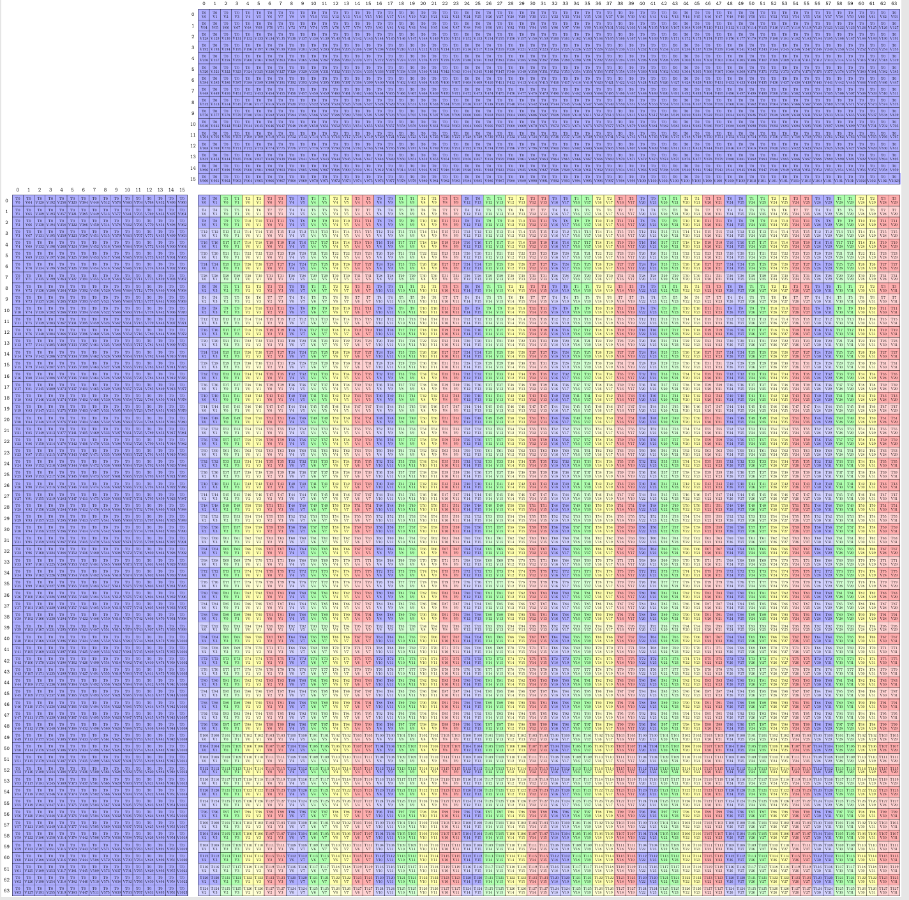

WGMMA
WGMMA（Warp-Group Matrix Multiply-Accumulate，线程束组矩阵乘加是NVIDIA在Hopper架构中引入的第四代Tensor Core核心PTX指令。其新特性为更宽的指令形状，Shared Memory操作数和异步计算。

我们观察wgmma PTX的新形态和其在CuTe中的命名。
1SM90_64x64x16_F16F16F16_SS
2wgmma.mma_async.sync.aligned.m64n192k16.f16.f16.f16
- 一条wgmma指令可以处理
64x64x16的tile SS代表矩阵A和B从SMEM直接读取mma_async表示这是一条异步指令，指令在发出之后立即退休，不阻塞后续指令
下面我们将分别介绍这三个wgmma新特性。
Warp Group and Larger Tile
前代Ampere通常使用以一个Warp32个线程为单位的 mma.sync 指令。而Hopper引入了Warp Group概念，由4个Warp（共128个线程）共同issue指令并执行MMA。PTX中的sync.aligned标志要求该128个线程必须到达相同的代码执行点，并以相同的参数同时发射该指令。
由128个线程共同协作带来了诸多好处。 Ampere架构上FP16最宽指令只有16*8*16，即使是四个MMA沿M方向排列，也只有16*32*16,远远小于Hopper 首先是减少了SMEM的读取次数